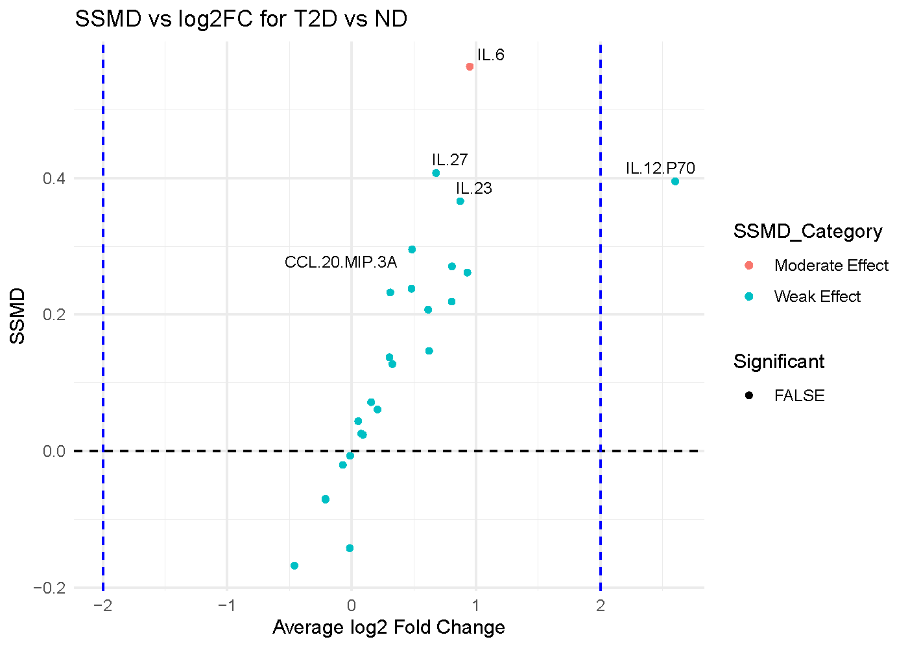

Understanding Dual-Flashlight Plot
Source:vignettes/Understanding-Dual-Flashlight-Plot.Rmd
Understanding-Dual-Flashlight-Plot.RmdWhen to use a dual-flashlight plot
The dual-flashlight plot is useful when you want to screen for cytokines that show both a meaningful fold change and a meaningful effect size threshold. In CytokineProfile Shiny, it is best treated as a prioritization plot rather than as a formal hypothesis-testing figure.
When not to use a dual-flashlight plot
This plot is usually not the best fit when:
- you need p-value-centered inference rather than threshold-based screening
- you want to compare more than two groups at once
- your question is about full raw distributions rather than prioritized hits
What the app is showing
The example below compares subjects with Type 2 Diabetes (T2D) against Non-Diabetic (ND) subjects.

The axes
- X-axis: Average log2 fold change (
log2FC) Positive values indicate higher abundance in one group, and negative values indicate lower abundance. - Y-axis: Strictly standardized mean difference (
SSMD) SSMD is an effect-size measure that combines mean difference and within-group variability. Larger absolute values indicate stronger group separation.
The visual cues
- Each point is one cytokine.
- The vertical dashed lines mark the user-chosen
log2FCthreshold. - The highlighted points are the cytokines that cross both the
SSMDthreshold and thelog2FCthreshold. - The labels usually identify the strongest hits according to the ranking criterion used in the app.
Which app arguments matter most
The most important controls are:
-
Comparison Column: decides which categorical variable defines the comparison. -
Condition 1andCondition 2: decide which two levels are contrasted in the plot. -
SSMD Threshold: controls how large the effect size must be before a point is treated as a notable hit. -
Log2 Fold Change Threshold: controls how large the fold change must be. -
Top Labels: controls how many of the top-ranked cytokines are labeled.
These thresholds are not cosmetic. They determine which cytokines get emphasized, so they should be set intentionally and reported clearly.
How to interpret the figure
A dual-flashlight plot is easiest to read in terms of agreement between the two axes:
- Points far from zero on the x-axis have larger fold changes.
- Points high on the y-axis have stronger SSMD effect sizes.
- Points that cross both thresholds are often the most compelling screening candidates.
- Points with strong SSMD but small fold change may be consistent yet not large in magnitude.
- Points with large fold change but weak SSMD may reflect unstable or variable signals.
For the example shown:
- A point in the far upper-left region would represent a cytokine with a large negative fold change and a strong effect size.
- A point near the center horizontally but high vertically would suggest consistent separation without a large fold change.
- A point far left or right but not high on SSMD should be treated more cautiously because the magnitude of change is not matched by equally strong standardized separation.
Common cautions
The most important caution is conceptual:
- This plot is not driven by p-values.
- A highlighted point is a threshold-based hit, not automatically a statistically significant result.
That makes the plot very useful for screening, but it should be paired with univariate testing or direct inspection of the raw data when you want inferential evidence.
Additional cautions:
- Threshold choice strongly affects which points look important.
- Very small sample sizes can make both fold change and SSMD less stable.
- The direction of the fold change depends on the group ordering, so always confirm which group is treated as the reference.
How to reproduce the result in the app
- Filter the dataset to the two groups you want to compare.
- Choose
Dual-Flashlight Plot. - Select
Comparison Column,Condition 1, andCondition 2. - Set
SSMD Threshold,Log2 Fold Change Threshold, andTop Labels. - Review the highlighted cytokines as prioritized candidates for follow-up.

What to read next
Related articles:
- Understanding Volcano Plot when p-values are central to the screening goal.
- Understanding Error-Bar Plots for compact group summaries.
- Understanding Boxplots and Violin Plots for distribution-level follow-up on prioritized hits.
Last updated: April 05, 2026